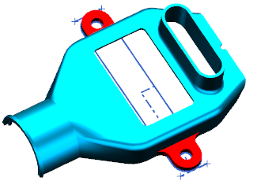
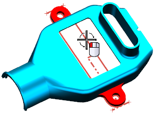
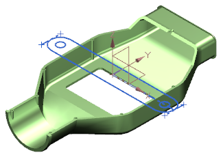
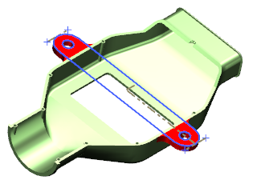
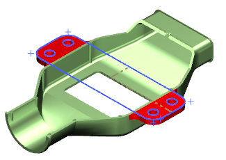

复制草图
您也可以在起始部件之间创建 WAVE 链接。您将复制上半部分中用于创建安装凸起的草图岛下半部分中，则对上半部分草图进行的修改都将使下半部分中的草图进行更新。
-
将 top_start 设为显示部件。

-
在装配导航器中，右击 top_start 节点并选择WAVE→将几何体复制到部件。
-
在选择部件对话框中，双击 bottom_start.prt。
-
选择您创建的草图然后点击确定。

-
将 bottom_start 设为显示部件。

-
选择装配→WAVE→部件间链接浏览器 。
在选定部件中的部件间链接组中，您可以看到 bottom_start 中含有链接到部件文件 top_start 以及 wav3_sys_eng_bottom 的链接。
-
点击关闭。
-
使用链接的草图来创建安装凸起。

-
将 top_start 设为显示部件。
-
修改安装凸起的草图。

-
将 bottom_start 设为显示部件。
WAVE 链接的草图也将发生更新。

注释
如果 WAVE 链接没有更新，请确保未选中工具→更新→部件间更新→延迟几何体、表达式和 PMI 选项。